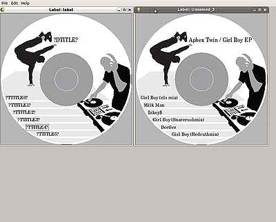

qlscribe
Dieser Artikel wurde für die folgenden Ubuntu-Versionen getestet:
Ubuntu 14.04 Trusty Tahr
Zum Verständnis dieses Artikels sind folgende Seiten hilfreich:
Bei Qt lightScribe  handelt es sich um ein auf der Grafikbibliothek Qt basierendes Programm, das zum Labeln von LightScribe-fähigen Medien verwendet werden kann. Anders als die beiden Programme 4L: LaCie LightScribe Labeler für Linux und der einfach gehaltene Simple Labeler ist es nicht nur möglich, Labels mit Text- und Grafikelementen selbst zu gestalten, sondern auch beispielsweise mit GIMP vorgefertigte zu verwenden. Eine Besonderheit ist des Weiteren das Erstellen von Labeln für Audio-CDs mittels CDDB-Daten. Die Bedienung ist einfach und sollte niemanden vor größere Probleme stellen, auch wenn das Programm nur in Englisch vorliegt.
handelt es sich um ein auf der Grafikbibliothek Qt basierendes Programm, das zum Labeln von LightScribe-fähigen Medien verwendet werden kann. Anders als die beiden Programme 4L: LaCie LightScribe Labeler für Linux und der einfach gehaltene Simple Labeler ist es nicht nur möglich, Labels mit Text- und Grafikelementen selbst zu gestalten, sondern auch beispielsweise mit GIMP vorgefertigte zu verwenden. Eine Besonderheit ist des Weiteren das Erstellen von Labeln für Audio-CDs mittels CDDB-Daten. Die Bedienung ist einfach und sollte niemanden vor größere Probleme stellen, auch wenn das Programm nur in Englisch vorliegt.
Voraussetzungen¶
Wie im Artikel LightScribe beschrieben, muss auch für qlscribe zuerst die Basis-Installation durchgeführt werden.
Installation¶
Das Programm ist nicht in den offiziellen Paketquellen enthalten. Daher muss man das Programm aus dem Quelltext kompilieren, hier eine kurze Anleitung zum Kompilieren [1] für 32-bit-Systeme. Die folgenden Pakete müssen installiert werden[2]:
build-essential
alien
fakeroot
dh-make
cmake
qt4-qmake
libqt4-dev
libdbus-1-dev
libdbus-glib-1-dev
libc6-dev-i386
 mit apturl
mit apturl
Paketliste zum Kopieren:
sudo apt-get install build-essential alien fakeroot dh-make cmake qt4-qmake libqt4-dev libdbus-1-dev libdbus-glib-1-dev libc6-dev-i386
sudo aptitude install build-essential alien fakeroot dh-make cmake qt4-qmake libqt4-dev libdbus-1-dev libdbus-glib-1-dev libc6-dev-i386
Ferner wird noch das "Linux Public SDK" von Lightscribe benötigt, was aber leider nur als RPM-Paket  vorliegt. Die Konvertierung mit alien [3] geht aber schnell und unkompliziert (mit dem letzten der vier Befehle wird wieder aufgeräumt):
vorliegt. Die Konvertierung mit alien [3] geht aber schnell und unkompliziert (mit dem letzten der vier Befehle wird wieder aufgeräumt):
fakeroot alien -vt lightscribePublicSDK-1.18.6.1-linux-2.6-intel.rpm fakeroot alien -vd lightscribePublicSDK-1.18.6.1.tgz sudo dpkg -i lightscribepublicsdk_1.18.6.1-2_all.deb rm -f lightscribePublicSDK-1.18.6.1-linux-2.6-intel.rpm lightscribePublicSDK-1.18.6.1.tgz
Da häufig die Bibliotheken libstdc++ bzw. libdbus-1 nicht gefunden werden, muss man ggf. noch einen Symlink setzen:
sudo ln -s /usr/lib32/libstdc++.so.6 /usr/lib32/libstdc++.so
sudo ln -s /lib/i386-linux-gnu/libdbus-1.so.3 /lib/i386-linux-gnu/libdbus-1.so
Nun lädt man sich von sourceforge.net das aktuelle .tar.gz-Archiv herunter, entpackt [4] dieses und wechselt im Terminal [5] in das Verzeichnis:
tar xvzf qlscribe*.tar.gz cd qlscribe*/
Nun kann mit dem Paketbau begonnen werden:
dh_make --createorig fakeroot dpkg-buildpackage
Das erstellte Paket qlscribe*.deb befindet sich einen Ordner aufwärts und kann dann manuell installiert [1] werden.
64-Bit¶
Eine Anleitung für Ubuntu 11.04 64-bit kann im Hilfeforum von qlscribe gefunden werden.
Benutzung¶
Mit qlscribe ist es möglich, ein Label mit Text und Grafik zu gestalten. Als Vorlagen werden "Title", "Content" und "Full" angeboten (siehe unten). Aber auch ein Öffnen von mit anderen Programmen wie etwa GIMP oder Inkscape erstellten Labels ist über "File -> Open..." möglich. Labels müssen in einem der üblichen Bildformate wie etwa PNG, JPG oder SVG vorliegen. Hat man sich für ein Label entschieden, können Inhalte in Form von "Image" (Bilddatei), "Text" und "Round Text" eingefügt werden.
Da ein Einfügen mittels Drag'n'Drop leider nicht möglich ist, erfolgt dies über den Menüpunkt "Edit -> Insert". Bei gebogenem Text erleichtert eine Vorschaufunktion das Editieren, da so Winkel Position und Radius leichter eingestellt werden können (siehe Abbildung). Eingefügte Objekte können aber auch ganz einfach durch Ziehen mit der Maus verschoben werden.
| Von links nach rechts: Title, Content und Full |
| Beispiel mit Vorschau |
 |
| Gerundeten Text bearbeiten |
Ist man mit dem Ergebnis zufrieden, erfolgt die Ausgabe über den Menüpunkt "File -> Print".
Labels mit CDDB-Daten¶
Das Erstellen von Labeln mithilfe von CDDB-Daten soll hier in Anlehnung an die Dokumentation von qlscribe kurz erläutert werden. Als erstes öffnet man ein neues Label (Full-Vorlage) oder öffnet ein bestehendes Label. In dieses Label werden nun die Textobjekte "?DTITLE?" und mehrere "?TTITLEX" eingefügt, wobei dies Platzhalter sind und "?DTITLE?" für den späteren Albumtitel und die "?TTITLEX?" für die Namen der Titel und deren Nummer (X) stehen, so dass sich ihre Anzahl aus der entsprechenden CD ergibt. Nach der Speicherung des vorbereiteten Labels beispielsweise als label.qlx werden nur noch die CDDB-Daten oder genauer die sog. "Disc-ID" benötigt.
Im Folgenden wird die "Girl Boy EP" von Aphex Twin als Beispiel verwendet. Die jeweilige Disc-ID kann man z.B. manuell auf freedb.org heraussuchen. Im konkreten Fall wäre das also 4d03a706. Nun speichert man die CDDB-Daten z.B. als girlboy.txt ab [6]:
wget -O girlboy.txt http://www.freedb.org/freedb/rock/4d03a706
Nun erstellt man noch ein Coverbild girlboy.jpg mit z.B. 800x800 Pixeln und übergibt die Bilddatei, die CDDB-Daten und die Label-Datei beim Programmaufruf an Qt lightScribe:
qlscribe --image girlboy.jpg -s 800 --file girlboy.txt label.qlx
Man erhält:

Hinweis:
Es sollte also darauf geachtet werden, die Position und Schriftgröße so zu wählen, dass die Texte nicht abgeschnitten werden. Sollte es später doch dazu kommen, einfach die Platzhalter verschieben, speichern und den Befehl wiederholen.
Links¶
ubuntu_lightscribe.png
- BeispieldateiDiscWrapper - alternatives Programm
LightScribe - Hauptartikel
- Erstellt mit Inyoka
-
 2004 – 2017 ubuntuusers.de • Einige Rechte vorbehalten
2004 – 2017 ubuntuusers.de • Einige Rechte vorbehalten
Lizenz • Kontakt • Datenschutz • Impressum • Serverstatus -
Serverhousing gespendet von